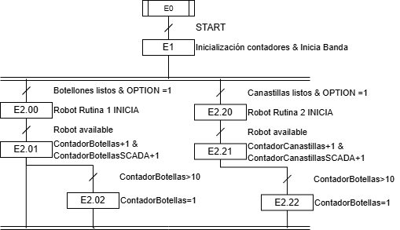

El PLC coordina modos, permisos y fallas: esta sección documentará el modelo de estados, entradas/salidas críticas y coherencia con la arquitectura ISA-95 del integrador.
Grafcet y modos de operación
Pasos, transiciones, macro-etapas (manual, automático, paro), sincronización con línea y condiciones de habilitación desde seguridad y SCADA.

OPTION.Documentado hasta la fecha: inicialización y conteo por línea. Los modos manual, cambio de producto y parada de emergencia quedan pendientes para una próxima entrega.
Lógica Ladder y estructura de programas
La rutina MainRoutine del programa MainProgram (controlador Palletizer_Routine) implementa el Grafcet anterior en lógica Ladder sobre Studio 5000. Se estructura en 22 rungs repartidos en cuatro fases: memorias de etapa, transiciones, acciones combinatorias y pausa del conveyor.
| Fase | Rungs | Función |
|---|---|---|
| Secuencial | 0 – 6 | Memorias de etapa del Grafcet con auto-retención y desactivación por la etapa siguiente (E1L, E2_00P–E2_02P, E2_20P–E2_22P). |
| Transiciones | 7 – 12 | Condiciones de avance: sensores de barrera/línea, ROBOT_OPTION, ROBOT_AVAILABLE y fin de conteo (.DN) con reset del acumulador. |
| Combinatoria | 13 – 20 | Acciones: arranque del conveyor, selección de rutina del robot, conteo de botellas/canastillas (planta y SCADA) y temporizadores de caída. |
| Pausar conveyor | 21 | Temporización de línea llena (T_BOTELLAS_LLENO, preset 5). |
![Diagrama ladder de la rutina MainRoutine en cuatro fases. Fase secuencial (rungs 0-6): memorias de etapa E1L y E2_00P a E2_22P, cada una con rama paralela de arranque o auto-retención y contacto normalmente cerrado de la etapa siguiente. Transiciones (rungs 7-12): T_200 por sensores de barrera y línea de botellones con EQU ROBOT_OPTION igual a 1; T_201 por ROBOT_AVAILABLE; T_202 por CONTADOR_BOTELLAS.DN con MOV 0 al acumulador; equivalentes T_220, T_221 y T_222 para canastillas. Fase combinatoria (rungs 13-20): OTL de CONVEYOR_RUNNING y MOV 1 a ROBOT_OPTION; OTL de ROBOT_RUTINA; contadores CTU de botellas (preset 10) y canastillas (preset 16) más sus contadores SCADA (preset 16); temporizadores TON de caída de 1000 y 2000 ms. Pausar conveyor (rung 21): TON T_BOTELLAS_LLENO con preset 5.](../img/diagramas/ladder-mainroutine.svg)
MainRoutine — lógica Ladder redibujada a partir del proyecto de Studio 5000 (MainProgram.L5X).Diagrama vectorial generado a partir de la exportación L5X del proyecto; contactos, bobinas, presets y operandos corresponden a la lógica real. Ver en tamaño completo →
Studio 5000 / emulación
Configuración de rack, módulos de E/S, enlace con Logix Emulate y pruebas de escenarios antes de despliegue físico.
Validación en Studio 5000
Pruebas de la lógica de control en emulación con Logix Emulate. Verificación de secuencias, tiempos de ciclo y respuesta ante fallas.
Disponible tras la sustentación final · Mayo 2026
Interlocks y seguridad
Condiciones de bloqueo, reseteo de fallas, paros de categoría y coherencia con celda robotizada y periféricos.
- Matriz preliminar causa–interlock–acción.
- Secuencias de rearme y prueba de lazo.
- Integración con etiquetas de alarma en SCADA.
Interlocks y seguridad
Matriz de enclavamientos de seguridad, permisos de operación y manejo de fallas con recuperación automática.
Disponible tras la sustentación final · Mayo 2026
Videos del Módulo
Material audiovisual de control industrial.
Video del módulo
Demostración de la lógica PLC en ejecución, cambio de producto y respuesta a fallas.
Pendiente · 2026